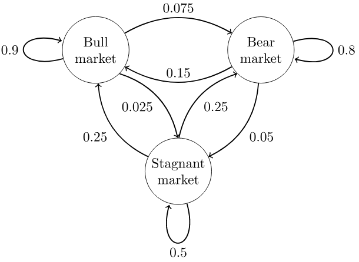

马尔科夫链假设某一时刻状态转移的概率只依赖于它的前一个状态。这样做可以大大简化模型的复杂度，因此马尔科夫链在很多序列模型中得到广泛的应用，比如循环神经网络RNN，隐式马尔科夫模型HMM等.
马尔科夫链分布提供了使马尔科夫链和初始状态无关的一个办法，并刻画了马尔科夫链在长时间下的极限行为和平均行为。
马尔科夫过程/马尔科夫链 是一种随机过程, 本文首先简单回顾随机过程中的平稳随机过程, 然后引出马尔科夫链及其平稳分布.
变量说明:
- $X$ : 随机变量;
- $x$ : 随机变量的值;
- $\chi$ : 随机变量所有可能取值的集合. $ \forall x \in \chi$ . 对于马尔科夫链来说 $\chi$ 为其状态空间.
平稳随机过程
随机过程: 设有一个过程$\{X_i\}$, 若对于每一个固定的时刻 $i$ , $X_i$ 是一个随机变量, 则称 $\{X_i\}$ 为随机过程.
随机过程是一组随时间变化的随机变量序列, 刻画一个过程需要知道所有有限的联合概率密度函数:
$$
\begin {align}
& P(X_1 = x_1, X_2=x_2, \dots, X_n=x_n) = P(x_1, x_2, \dots, x_n) \\
& (x_1, x_2, \dots, x_n) \in \chi ^n
\end {align}
$$
平稳随机过程: 如果随机变量序列的任何有限子集的 *联合分布 关于时间下标的位移 不变 , 即 对于每个 $n$ 和 位移$l$, 以及任意的 $ x_1, x_2, \dots, x_n \in \chi $ 有:
$$
\begin {align}
P(X_1 = x_1, X_2=x_2, \dots, X_n=x_n) = P(X_{1+l} = x_1, X_{2+l}=x_2, \dots, X_{n+l}=x_n) \\
\end {align}
$$
则称该随机过程是平稳的(Stationary).
马尔科夫过程
离散随机过程 $\{X_i\}$ 满足
$$
P(X_n=x_n|X_{n-1}=x_{n-1},…,X_1=x_1) = P(X_n=x_n|X_{n-1}=x_{n-1})
$$
则称其为马尔可夫链/马尔科夫过程.
既然某一时刻状态转移的概率只依赖于它的前一个状态，那么我们只要能求出系统中任意两个状态之间的转换概率，这个马尔科夫链的模型就定了。
马尔科夫链:
- 是一种随机事件序列;
- 认为未来的取值只与当前取值有关，与历史取值无关
- 是一种离散型的随机过程。
时间不变的马尔科夫过程 : 如果条件概率 $P(x_{n+1} \mid x_n)$ 不依赖与 $n$, 即对 $n=1,2, \dots$ 有:
$$
P(X_{n+1}= b \mid X_n = a) = P(X_2=b \mid X_1=a)
$$
则成马尔科夫链是 时间不变的.
时间不变的马尔科夫链中, 从一个状态变道另一个状态的的概率与下标(时间)无关. 一个时间不变的马尔科夫链完全可以由其初始状态和概率转移矩阵表示.
实际上我们平时所说的马尔科夫链 一般都是 时间不变的. 如在HMM中用到的马尔科夫链.
状态空间: 马尔科夫链中所有可能的状态值的集合, 记为 $\chi$ .
如果马尔科夫链可以从任意状态经过有限步转移到另一任意状态, 且其转移概率为正, 则成词马尔科夫链是不可约的. 即状态空间中任意两个状态都是相互连通的. 这里的连通可以不是直接相连，只要能够通过有限次转移到达即可。比如对于a, b, c状态，存在a->b, b->c，则我们认为a到c是可连通的。
马尔科夫链中如果从一个状态转移到他自身的不同路径长度的最大公因子为1, 则称马尔科夫链是非周期的. 我们处理的问题基本上都是非周期性的.
平稳分布 / 平稳马尔科夫过程
马尔科夫链完全可以由其初始状态和概率转移矩阵表示. 令向量$\pi(j)$ 表示序列中某个随机变量正好取第 $j$ 个状态的概率, $P$ 表示状态转移矩阵, $P_{ij}$表示从第$i$个状态转移到第$j$个状态的概率. note: 此处的 $i$ 和 $j$ 表示的是状态空间中状态的序号, 而不是随机过程中的时间序号.
如果一个非周期的马尔科夫链有状态转移矩阵$P$, 并且它的任何两个状态是连通的，那么$\lim_{n \to \infty} P_{ij}^n $与$i$无关，我们有：
结论一:
$$
\lim_{n \to \infty}P_{ij}^n = \pi (j)
$$
结论二:
假设状态空间中共有 $K$ 个状态($K$ 可以是有限的，也可以是无限的), 状态转移矩阵经过 $n$ 自乘以次后的方阵中各元素的值只与列号有关, 同列中的元素的值相同.
$$
\lim_{n \to \infty}P^n =
\begin {Bmatrix}
\pi(1) & \pi(2) & \dots & \pi(j) & \dots& \pi(K) \\
\pi(1) & \pi(2) & \dots& \pi(j) & \dots& \pi(K) \\
\vdots & \vdots & \ddots & \vdots & & \vdots & \\
\pi(1) & \pi(2) & \dots& \pi(j) & \dots & \pi(K) \\
\vdots & \vdots & & \vdots & \ddots & \vdots & \\
\pi(1) & \pi(2) & \dots& \pi(j) & \dots& \pi(K) \\
\end{Bmatrix}
$$
结论三:
$$
\pi (j) = \sum_{i=0}^{K} \pi(i)P_{ij}
$$
note: $K$ 可以是有限的，也可以是无限的. 一般文章中使用 $\infty$, 为了避免将此处的$i$误解为马尔科夫链中随机变量的序号, 我使用了$K$来代替.
结论四:
若马尔科夫链是 非周期的 , 并且其何两个状态是连通的 , 则该马尔科夫链具有唯一.
即: $\pi$是方程$\pi P = \pi$的唯一非负解.
其中：
$$
\begin {align}
& \pi=[\pi(1),\pi(2),\dots ,\pi(j), \dots \pi(K)] \
& \sum_{i=0}^{K} \pi(i)=1 \\
& K \le \infty \\
\end {align}
$$
再次强调: $n$ 表示一个马尔科夫链中第 $n$ 个随机变量的序号. $i$ 和 $j$ 是状态序号.
上面的性质中需要注意的有：
- 非周期的马尔科夫链：这个主要是指马尔科夫链的状态转化不是循环的，如果是循环的则永远不会收敛。我们遇到的马尔科夫链一般都是非周期性的。
- 任何两个状态是连通的：这个指的是从任意一个状态可以通过有限步到达其他的任意一个状态。
- 马尔科夫链的状态数可以是有限的，也可以是无限的。因此可以用于连续概率分布和离散概率分布。
- $\pi$通常称为马尔科夫链的平稳分布。
平稳马尔科夫过程的例子

这个马尔科夫链是表示股市模型的，共有三种状态：牛市（Bull market）, 熊市（Bear market）和横盘（Stagnant market）。每一个状态都以一定的概率转化到下一个状态。比如，牛市以0.025的概率转化到横盘的状态。这个状态概率转化图可以以矩阵的形式表示。如果我们定义矩阵阵$P$, 某一位置$P(i,j)$的值为$P(j \mid i)$, 即从状态 $i$ 转化到状态 $j$ 的概率，并定义牛市为状态0， 熊市为状态1, 横盘为状态2. 这样我们得到了马尔科夫链模型的状态转移矩阵为：
$$
P =
\begin {Bmatrix}
0.9 & 0.075 & 0.025 \\
0.15 & 0.8 & 0.05 \\
0.25 & 0.25 & 0.5 \\
\end {Bmatrix}
$$
假设我们当前股市的概率分布为：$[0.3,0.4,0.3]$, 即30%概率的牛市，40%概率的熊盘与30%的横盘。然后这个状态作为序列概率分布的初始状态$v_{t0}$，将其带入这个状态转移矩阵计算$v_{t1},v_{t2},v_{t3} \dots$ 的状态。代码如下：
1 | import numpy as np |
部分输出结果如下:
1 | round: 0 [[0.3 0.4 0.3]] |
可以发现，从第60轮开始，我们的状态概率分布就不变了，一直保持在[0.625 0.3125 0.0625]，即62.5%的牛市，31.25%的熊市与6.25%的横盘。那么这个是巧合吗？
我们现在换一个初始概率分布试一试，现在我们用$[0.7,0.1,0.2]$作为初始概率分布，然后这个状态作为序列概率分布的初始状态$v_{t0}$，将其带入这个状态转移矩阵计算$v_{t1},v_{t2},v_{t3} \dots$的状态。结果如下：
1 | round: 0 [[0.7 0.1 0.2]] |
尽管这次我们采用了不同初始概率分布，最终状态的概率分布趋于同一个稳定的概率分布$[0.625 0.3125 0.0625]$， 也就是说马尔科夫链模型的状态收敛到的稳定概率分布与我们的初始状态概率分布无关。如果我们得到了这个稳定概率分布对应的马尔科夫链模型的状态转移矩阵，则我们可以用任意的概率分布样本开始，带入马尔科夫链模型的状态转移矩阵，这样经过一些序列的转换，最终就可以得到符合对应稳定概率分布的样本。这个性质不光对离散状态成立，连续状态时也成立。
对于一个确定的状态转移矩阵 $P$ ，它的 $n$ 次幂 $P^n$ 在当 $n$ 足够大的时候是确定的的值.
1 | matrix0 = np.matrix([[0.9,0.075,0.025], |
部分结果如下:
1 | round: 1 |
可以发现，在 $n \le 2$ 以后，$P^n$ 的值稳定不再变化，而且每一行都为$[0.625 0.3125 0.0625]$，这和我们前面的稳定分布是一致的。
参考资料
信息论基础